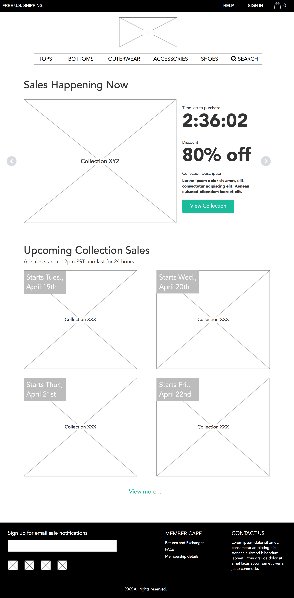
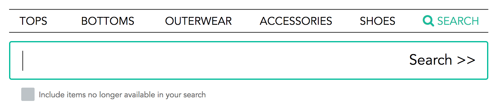
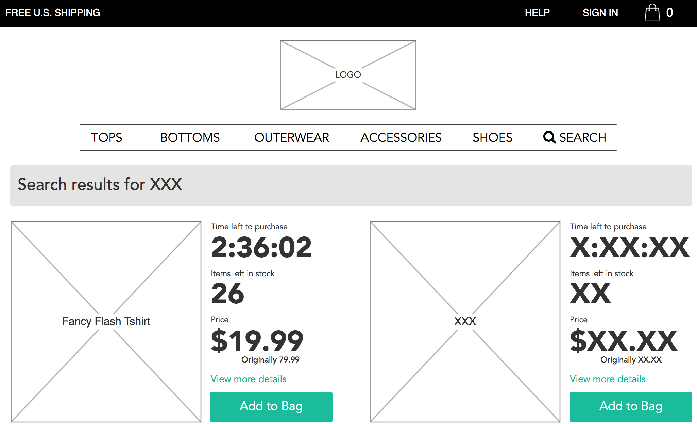
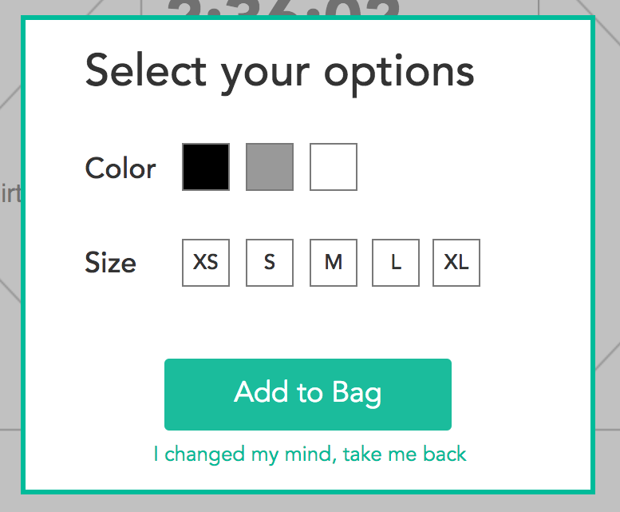
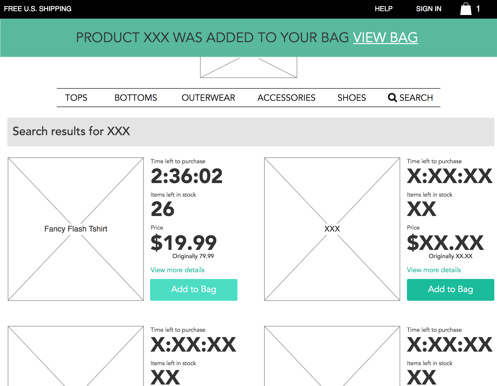
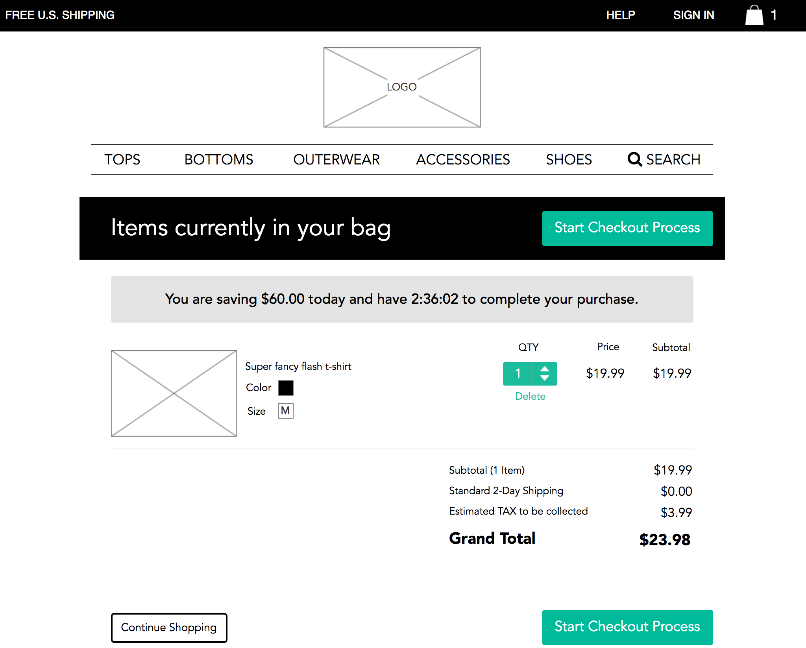
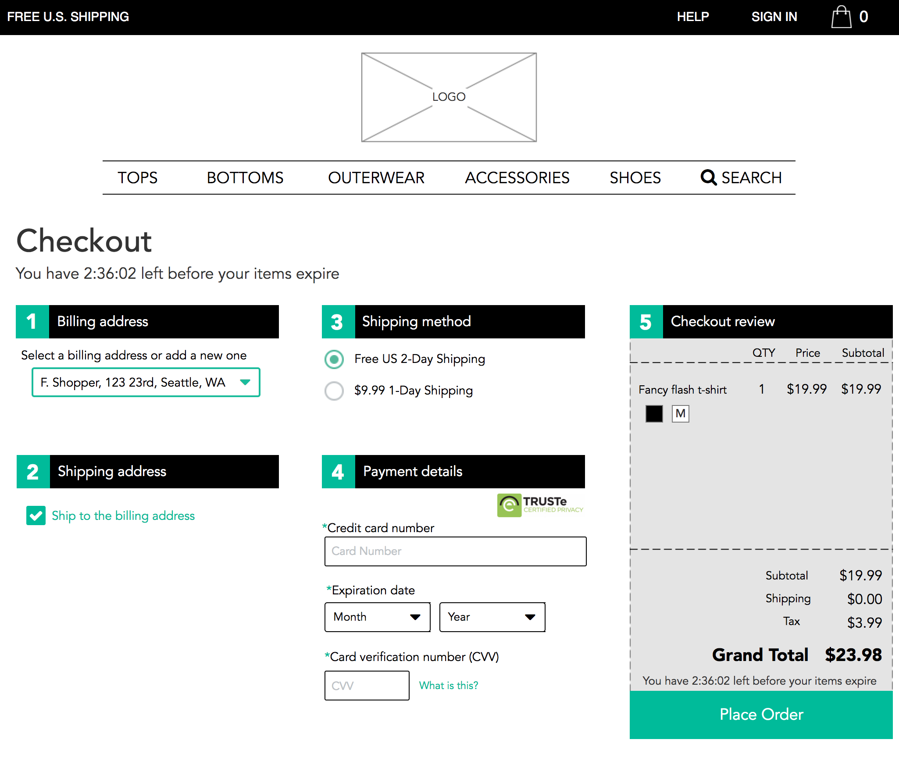
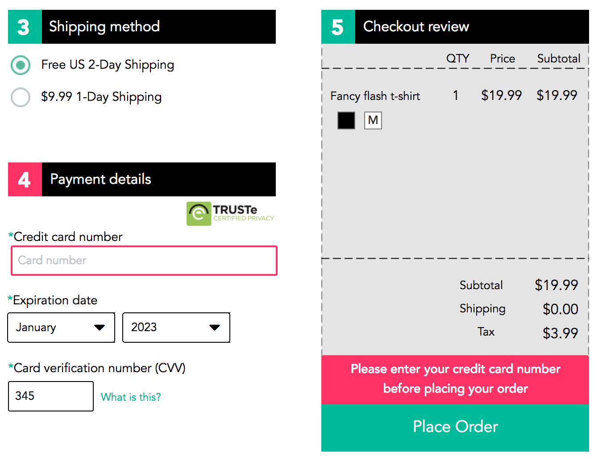

E-commerce Interaction Design
Project Summary
Experimenting with Axure animations and micro-interactions I built an interactive wireframe representing an e-commerce flash sale company. You can see some of the details here, or explore the interactive prototype.
Home page
The home page features a carousel of the current flash sales highlighting the time left to purchase as well as the discount percentage, along with a sale highlighting the upcoming sales.

Search
Search lives directly in the navigation, on click it displays a substantial text field to enter search terms, an optional check box is included for anyone wanting to search for collection sales that have already ended.

Search results
After a user submits a search, their search terms will be highlighted at the top to ensure the user that their search terms have been applied.

Item options
When the user decides to purchase, an options box will come into view which will allow the user to select their customizations, in this case size and color. A user who changes their mind can go back quickly using the "I changed my mind, take me back" link which clearly communicates what will happen on click.

Added to bag notification
After an item is added to the bag, a large notification is shown at the top with a direct link to the cart. This notification fades away after a few seconds.

Shopping bag
The shopping cart highlights the amount of savings, along with the time left to purchase. The user can quickly add more quantity. Two large call-to-actions for starting the checkout process appear both at the top for the user who wants to purchase quickly, and one at the bottom for the user that wants to further review their order.

Checkout
The checkout page provides a clear step-by-step process for gathering information. It hides information not needed until the user takes an action, for example they can add a new address and it will display fields.

Checkout error state
If the user forgets any required information, they will be shown an error message directly above the "Place Order" button, giving feedback close to where the user took an action. Color, along with border thickness increases (for accessibility) indicate the fields the user needs to take action on.
